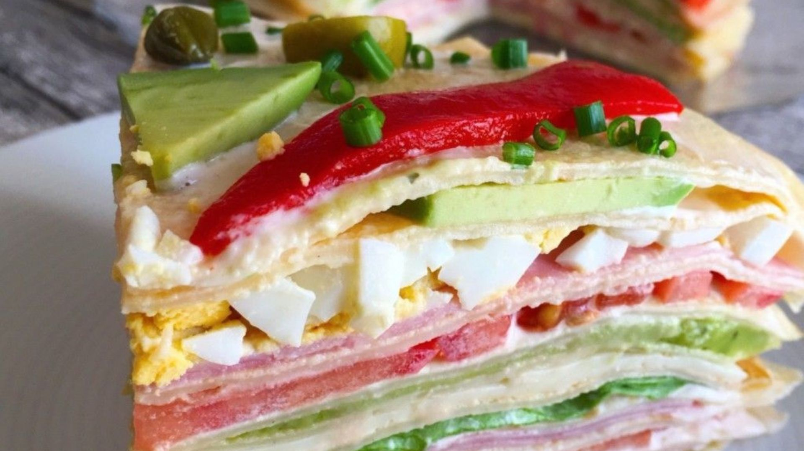
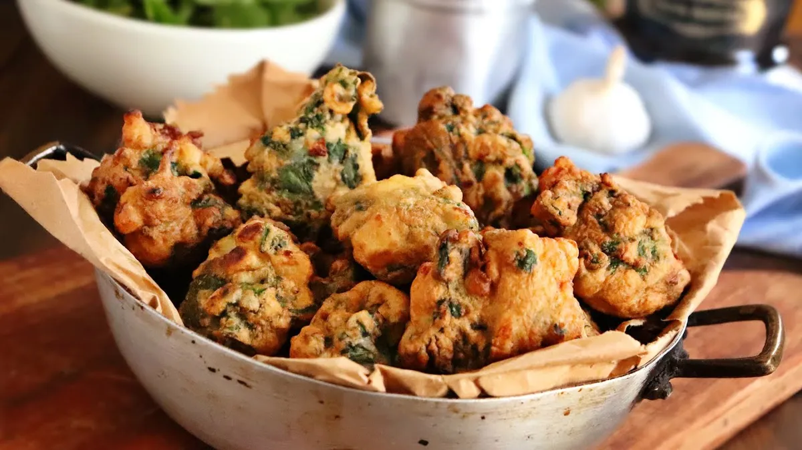

Recetas para compartir con toda la familia.
La Torre de panqueques es una receta argentina que se destaca por su originalidad y presentación. Se elabora utilizando panqueques como capas, que se alternan con rellenos de fiambre, queso y una mezcla de queso crema y mayonesa. A demás, se disfruta especialmente en ocasiones festivas o celebraciones familiares. ¿Qué esperas? Vamos a cocinar este delicioso plato casero.
 Seguir leyendoLas Verduras a la parrila son un plato popular en muchos paises, especialmente en la cocina Argentinas, en donde son el acompañamiento perfecto para las parrillas y asados. Tienen un sabor delicioso y ahumado que proviene de la cocción a la parrilla. ¡Anímate a probar esta receta, es sencilla y fácil de preparar!
.jfif) Seguir leyendo
Seguir leyendo
La Fondue de queso es un plato muy popular en muchos países del mundo, especialmente en Argentina, en donde se destaca por su sabor rico y reconfortante, gracias a la combinación de quesos. Su textura es cremosa y suave. Ideal para reuniones con la familia o amigos.
.jfif) Seguir leyendo
Seguir leyendo
Los Buñuelos de acelga, también conocidos como croquetas de acelga, son un delicioso plato lleno de sabor que pueden servirse como aperitivo, acompañamiento o incluso como plato principal. Son tiernas por dentro y crujientes por fuera, especialmente la parte superior que se dora durante el horneado.
 Seguir leyendo